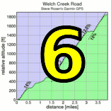

|  |  |
|
Bonny Doon - Pine Flat
|
Last year Levi delivered a ripping attack to emerge from the rain-swept Tour of California lead group. This year the Tour returned. Introducing Bonny Doon...

| results? | right here! |
| profile |  |
| distance | 7.2 miles (11.6 km) |
| climbing | 2142 ft (652 meters) |
| grade | 5.64% |
| where? | see below |
| when? | 13 Nov 2010 |
| what time | registration 9:00 to 10:00 climb starts @ 10:10 |
| RSVP | check back later! |
| waiver | Please fill one out before the climb! |
| how? |  |
| how much? | $10 (free for juniors and those with volunteer credit) |
| why? | why not? |
| coordinator |  |
| volunteers | sign up! |
| aerial view | Stanford Cycling |
| weather | Weather Underground Weather Bonk |
| other times | Strava 2009 Challenge TT |
| deja-vu? | New! |
| BikeMap | |
Sorry, folks! Our insurance requires all riders wear helmets during the climb, and we follow the USA Cycling rule against ear buds or other head phones. Rock to tunes before the climb, perhaps, but we need riders to pay attention to what's happening during the climb...
Just south of Davenport, on highway number one, sits peaceful Bonny Doon....
Ye banks and braes o' Bonny Doon
How can ye blume sae fair!
How can ye chant, ye little birds,
And I sae fu' o' care!
Volunteers make Low-Key tick! Without them, we no longer function. Please sign up for any week in the series using our new volunteer form! Thanks!!!
{kind=link}